WebSequence
WebSequence is part of the Code2Diagram tool, designed for creating sequence diagrams using a Domain-Specific Language (DSL). These diagrams illustrate the interactions between participants over time, making it easier to visualize complex processes, protocols, and workflows.
Benefits of WebSequence
- Simplicity: WebSequence uses a straightforward, text-based DSL, making it accessible even to those without extensive graphical design skills.
- Cross-Platform: The tool can run in both Node.js environments and browsers, providing flexibility in usage.
- Ease of Integration: It can be easily integrated into web projects, documentation systems, and other software tools.
- Customization: Users can customize diagrams to match their specific needs, adjusting elements like colors, fonts, and participant roles.
- Exportability: Diagrams created with WebSequence can be exported in various formats such as SVG, making them easy to share and embed in different platforms.
DSL Basics
Comments begin with a # and end at the next newline:
Meta data can be provided with particular keywords: Quoting strings is usually optional, for example these are the same:This is an websequence diagram for all the above code:
Each non-metadata line represents a step in the sequence, in order.
# Draw an arrow from agent "Foo Bar" to agent "Zig Zag" with a label:
# (implicitly creates the agents if they do not already exist)
Foo Bar -> Zig Zag: Do a thing
# With quotes, this is the same as:
"Foo Bar" -> "Zig Zag": "Do a thing"
This is an websequence diagram for the above code:
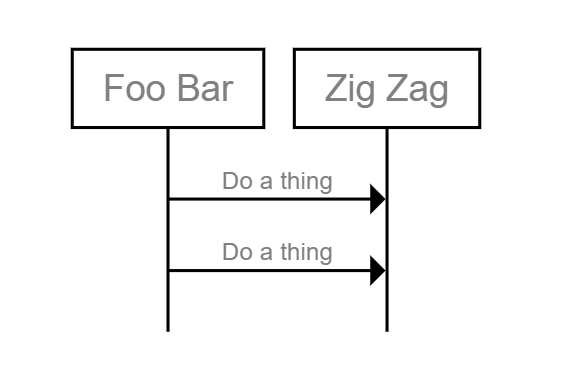
Blocks surround steps, and can nest:
This is an websequence diagram for the above code: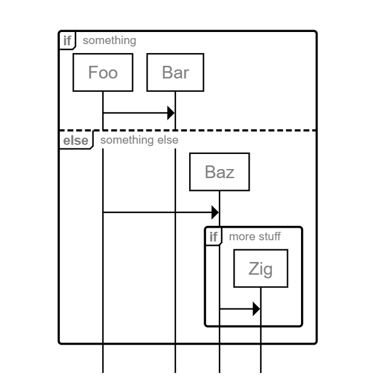
How It Works
WebSequence operates by interpreting text-based descriptions of sequence diagrams written in its DSL. Users define participants and their interactions using this language, and WebSequence renders these descriptions into visual diagrams.
Key Features and Syntax
Participants
Participants are the entities involved in the interaction, such as users, systems, or components.
This is an websequence diagram for the above code:
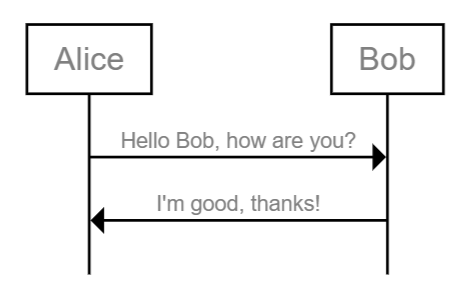
Messages
Messages represent interactions between participants, indicated by arrows (->).
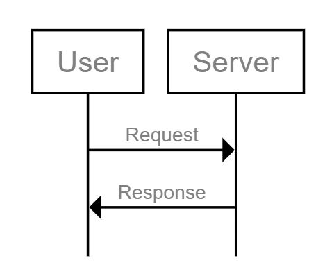
Notes
Notes provide additional context or explanations within the diagram.
This is an websequence diagram for the above code: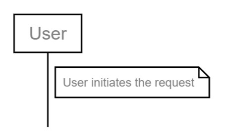
Titles and Labels
Diagrams can have titles for better clarity.
This is an websequence diagram for the above code:Customization
Various attributes can be adjusted to change the appearance and style of the diagrams.
Examples
Here's an example description using WebSequence:
Simple Usage
title Labyrinth
Bowie -> Goblin: You remind me of the babe
Goblin -> Bowie: What babe?
Bowie -> Goblin: The babe with the power
Goblin -> Bowie: What power?
note right of Bowie, Goblin: Most people get muddled here!
Bowie -> Goblin: "The power of voodoo"
Goblin -> Bowie: "Who-do?"
Bowie -> Goblin: You do!
Goblin -> Bowie: Do what?
Bowie -> Goblin: Remind me of the babe!
Bowie -> Audience: Sings
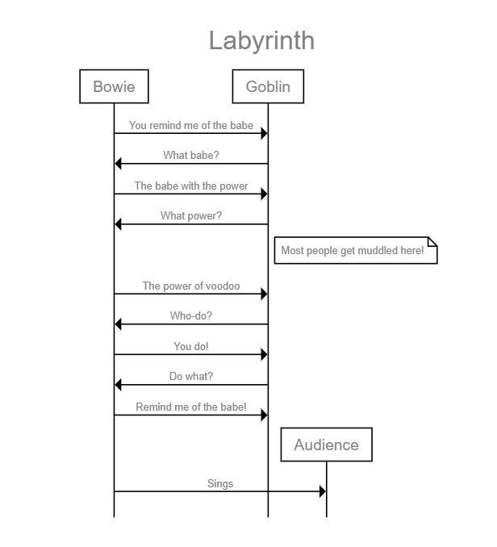
Connection Types
title Connection Types
begin Foo, Bar, Baz
Foo -> Bar: Simple arrow
Bar --> Baz: Dashed arrow
Foo <- Bar: Reversed arrow
Bar <-- Baz: Reversed & dashed
Foo <-> Bar: Double arrow
Bar <--> Baz: Double dashed arrow
# An arrow with no label:
Foo -> Bar
Bar ->> Baz: Different arrow
Foo <<--> Bar: Mix of arrows
Bar -> Bar: Bar talks to itself
Foo -> +Bar: Foo asks Bar
-Bar --> Foo: and Bar replies
Bar -x Baz: Lost message
# Arrows leaving on the left and right of the diagram
[ -> Foo: From the left
[ <- Foo: To the left
Foo -> ]: To the right
Foo <- ]: From the right
[ ~> ]: Wavy left to right!
# (etc.)
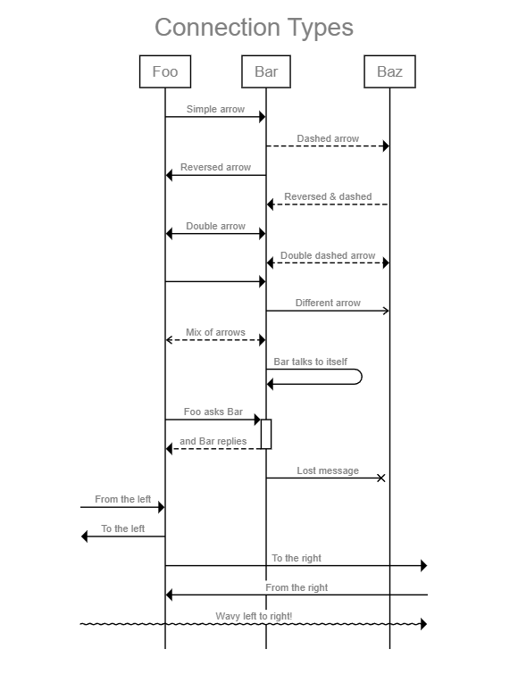
Dividers
title Dividers
begin Foo, Bar, Baz
Foo -> +Bar
divider
Bar -> +Baz
divider delay: This takes a while
-Baz --> Bar
divider tear with height 20: Lots of stuff happens
-Bar --> Foo
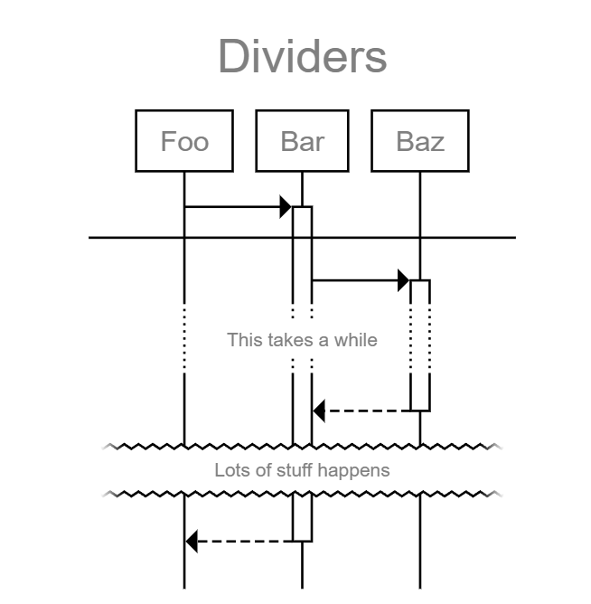
Notes & State
title Note Placements
begin Foo, Bar
note over Foo: Foo says something
note left of Foo: Stuff
note right of Bar: More stuff
note over Foo, Bar: "Foo and Bar
on multiple lines"
note between Foo, Bar: Link
# in long diagrams, we can add reminders of which agent is which:
relabel
text right: "Comments\nOver here!"
state over Foo: Foo is ponderous
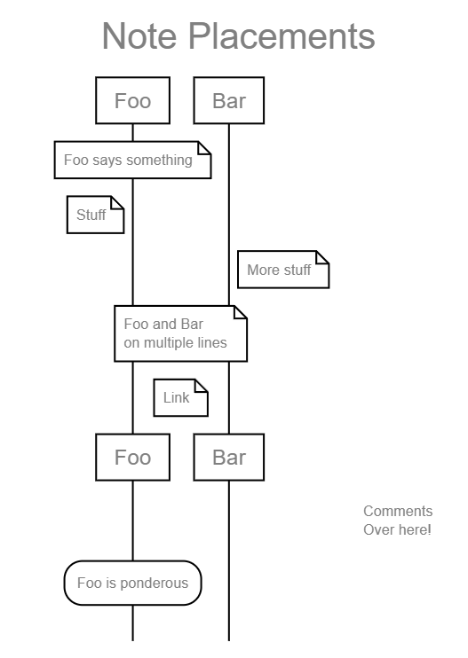
Logic
title At the Bank
begin Person, ATM, Bank
Person -> ATM: Request money
ATM -> Bank: Check funds
if fraud detected
Bank -> Police: "Get 'em!"
Police -> Person: "You're nicked"
end Police
else if sufficient funds
ATM -> Bank: Withdraw funds
repeat until "all requested money
has been handed over"
ATM -> Person: Dispense note
end
else
ATM -> Person: Error
end
This is an websequence diagram for the above code:
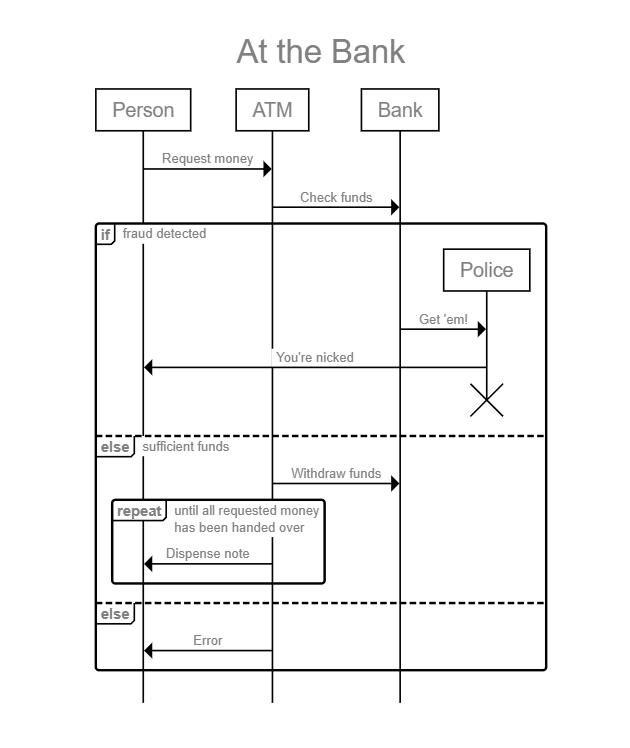
Label Templates
autolabel "[<inc>] <label>"
begin "Underpants\nGnomes" as A
A <- ]: Collect underpants
A <-> ]: ???
A <- ]: Profit!
This is an websequence diagram for the above code:
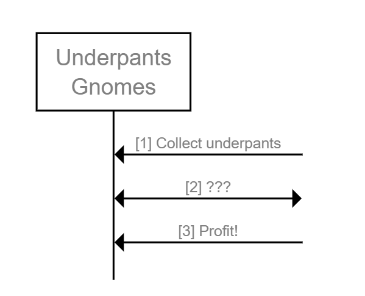
Multiline Text
title "My Multiline
Title"
begin Foo, Bar
note over Foo: "Also possible\nwith escapes"
Foo -> Bar: "Lines of text\non this arrow"
if "Even multiline\ninside conditions like this"
Foo -> "Multiline\nagent"
end
state over Foo: "Newlines here,
too!"

Themes
theme sketch
title Mockup
A thing -> +Another thing: Something happens
-Another thing --> A thing: With some response
note right of Another thing: Find out what happens here
end Another thing
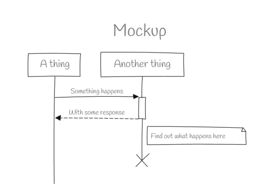
Short-Lived Agents
title "Baz doesn't live long"
note over Foo, Bar: Using begin / end
begin Baz
Bar -> Baz
Baz -> Foo
end Baz
note over Foo, Bar: Using * / !
# * and ! cause agents to be
# created and destroyed inline
Bar -> *Baz: make Baz
Foo <- !Baz: end Baz
# Foo and Bar end with black bars
terminators bar
# (options are: box, bar, cross, fade, none)
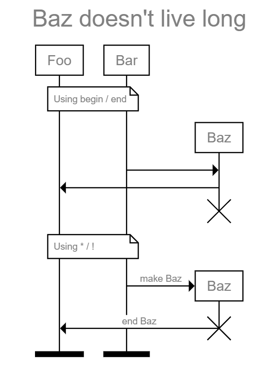
Agent Aliases
define My complicated agent name as A
define "Another agent name,
and this one's multi-line!" as B
A -> B: this is much easier
A <- B: than writing the whole name
This is an websequence diagram for the above code:
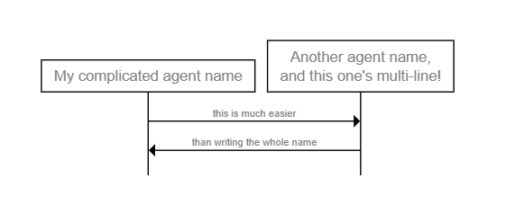
Markdown
define "Name with
**bold** and _italic_" as A
define "Also `code`
and ~strikeout~" as B
A -> B: "_**basic markdown
is supported!**_"
This is an websequence diagram for the above code:
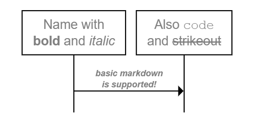
Alternative Agent Ordering
This is an websequence diagram for the above code:
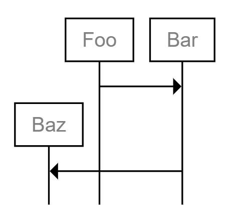
Agent Types
begin User, Application, PostgreSQL
User -> +Application
Application -> +PostgreSQL
-PostgreSQL --> Application
-Application --> User
User is a person
PostgreSQL is a database
This is an websequence diagram for the above code:
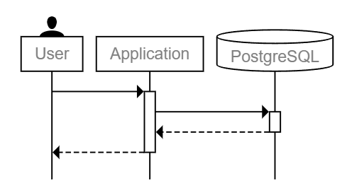
Asynchronous Communication
begin Initiator as I, Receiver as R
# the '...id' syntax allows connections
# to span multiple lines
I -> ...fin1
...fin1 -> R: FIN
# they can even inter-mix!
R -> ...ack1
R -> ...fin2
...ack1 -> I: ACK
...fin2 -> I: FIN
!I -> ...ack2
...ack2 -> !R: ACK
This is an websequence diagram for the above code:
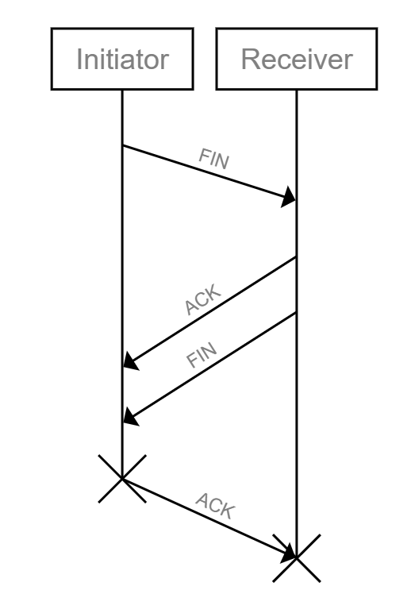
Simultaneous Actions
begin A, B, C, D
A -> C
# Define a marker which can be returned to later
some primary process:
A -> B
B -> A
A -> B
B -> A
# Return to the defined marker
# (should be interpreted as no-higher-then the marker; may be
# pushed down to keep relative action ordering consistent)
simultaneously with some primary process:
C -> D
D -> C
end D
C -> A
# The marker name is optional; using "simultaneously:" with no
# marker will jump to the top of the entire sequence.
This is an websequence diagram for the above code:

Practical Uses
WebSequence is particularly useful in various scenarios such as:
- Software Development: Documenting system interactions, API calls, and workflows.
- Project Management: Visualizing process flows and task dependencies.
- Education and Training: Teaching complex interactions in an easily digestible format.
- Business Analysis: Mapping out business processes and customer journeys.